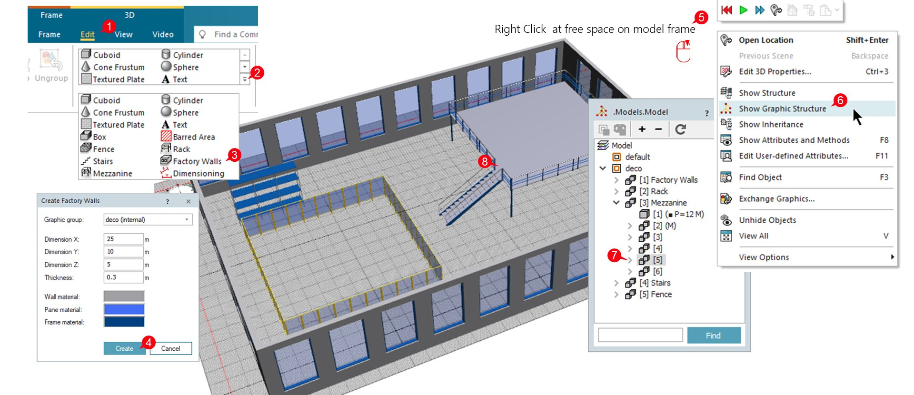
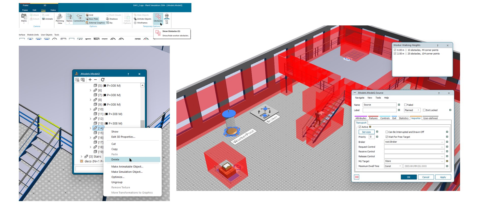
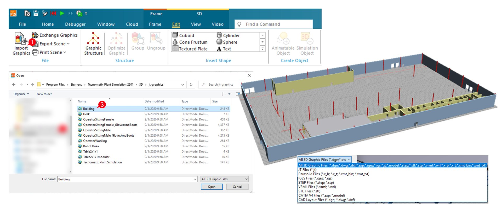
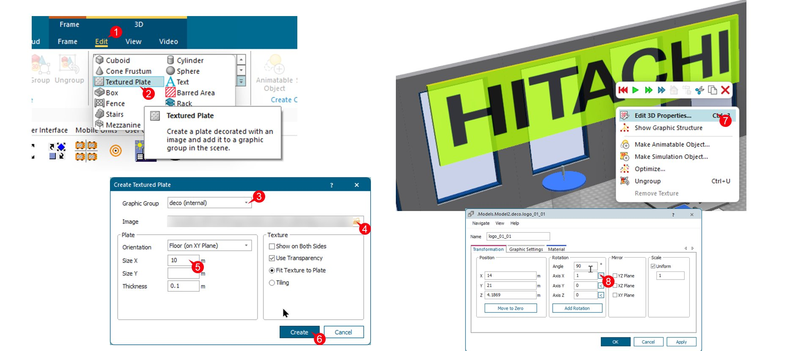
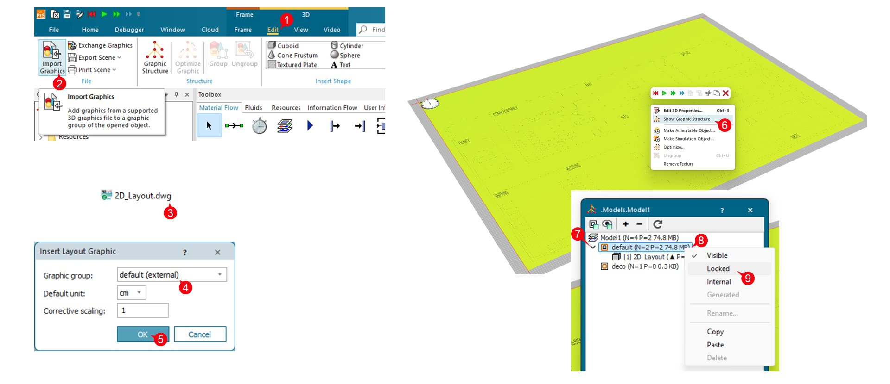
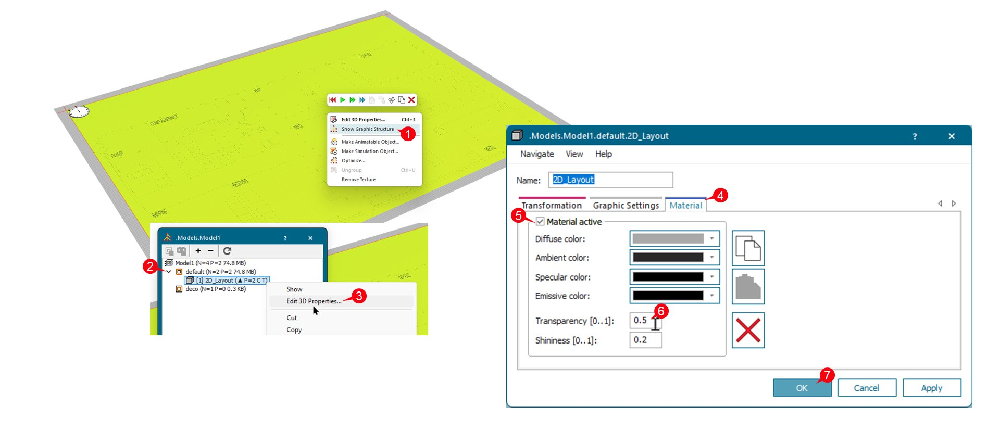

2.8 3D Factory and Warehouse
2. สินค้าคงคลังและแบบจำลองเสมือนจริงด้วย Plant Simulation · ภาคปฏิบัติ
วัตถุประสงค์การเรียนรู้
- สร้างผนังโรงงาน ชั้นวาง ชั้นลอย บันได และรั้ว ด้วย Insert Shape ในหน้าต่าง 3D ได้
- ใช้ Graphic Structure แก้ชิ้นส่วน 3D และเปิดดูสิ่งกีดขวาง (Obstacles) ของคนงานได้
- นำเข้าไฟล์ 3D (JT, STEP ฯลฯ) และติดรูปภาพบนผนังด้วย Textured Plate ได้
- นำเข้าผัง DWG เป็นพื้น ล็อกไม่ให้เลื่อน และปรับให้โปร่งแสงได้
แบบจำลองจากบทก่อน ๆ ทำงานได้แล้ว บทนี้ทำให้ดูเหมือนโรงงานและคลังสินค้าจริงในหน้าต่าง 3D — สร้างผนัง ชั้นวาง ชั้นลอย และบันไดด้วยเมาส์ นำเข้าไฟล์ 3D ติดป้ายหรือโลโก้บนผนัง แล้ววางผัง DWG ของโรงงานไว้ใต้แบบจำลอง ภาพ 3D ที่ดีช่วยให้ผู้บริหารและหน้างานเข้าใจผลจำลองได้ทันที
สิ่งที่ต้องมี: Plant Simulation 2504 · แบบจำลองที่เปิดหน้าต่าง 3D ได้ (เช่น จากบท 2.4)
· ไฟล์ผัง DWG ของโรงงาน (ในภาพใช้
2D_Layout.dwg) · รูปภาพโลโก้หรือป้าย (.jpg / .png)
ภาพรวม: 6 ขั้น
| ขั้นที่ | เรื่อง | ได้อะไร |
|---|---|---|
| 1 | Create 3D Factory | ผนังโรงงาน ชั้นวาง ชั้นลอย บันได รั้ว จาก Insert Shape |
| 2 | Edit 3D Structure และ Obstacles | ลบชิ้นส่วนที่ไม่ต้องการ ดูว่าคนงานเดินผ่านตรงไหนไม่ได้ |
| 3 | Import Graphics | อาคารหรือเครื่องจักรจากไฟล์ 3D |
| 4 | Textured Plate | โลโก้หรือป้ายติดผนัง |
| 5 | Import DWG | ผังโรงงาน 2D เป็นพื้น ล็อกไว้ไม่ให้เลื่อน |
| 6 | Set Transparency | ผังโปร่งแสง มองเห็นแบบจำลองชัดขึ้น |
default กับ deco: ของตกแต่ง 3D ทุกชิ้นอยู่ใน Graphic group ของเฟรม —
deco (internal) เก็บในไฟล์ .spp (ผนัง ชั้นวาง ป้าย) ส่วน default (external) ใช้กับไฟล์ที่นำเข้า เช่น ผัง DWG
ดูและแก้ได้ที่ Show Graphic Structureขั้นที่ 1: Create 3D Factory — ผนัง ชั้นวาง ชั้นลอย

- 1เปิดหน้าต่าง 3D ของเฟรม แล้วเลือกแท็บ
Edit(กลุ่ม3D) - 2คลิกลูกศร ▾ ของกลุ่ม
Insert Shapeเพื่อดูรูปทรงทั้งหมด - 3เลือก
Factory Walls— ในกลุ่มเดียวกันมีRack,Mezzanine(ชั้นลอย),Stairs,Fence,Barred AreaและDimensioning - 4หน้าต่าง
Create Factory Walls: Graphic groupdeco (internal)· Dimension X 25 m, Y 10 m, Z 5 m · Thickness 0.3 m · เลือกสีผนัง กระจก และกรอบ →Create - 5คลิกขวาที่ที่ว่างในหน้าต่าง 3D (ไม่ใช่บนวัตถุ)
- 6เลือก
Show Graphic Structure - 7ใน
.Models.Model › decoจะเห็นชิ้นที่สร้าง: [1] Factory Walls, [2] Rack, [3] Mezzanine, [4] Stairs, [5] Fence — กด > เพื่อดูชิ้นย่อย - 8ผล: โรงงานมีผนังและหน้าต่าง ชั้นวาง ชั้นลอยพร้อมราวกันตก และบันไดขึ้นชั้นลอย
วางแล้วค่อยปรับ: รูปทรงทุกชิ้นลากย้ายได้ในหน้าต่าง 3D และแก้ขนาดหรือตำแหน่งละเอียดได้ที่
คลิกขวา ›
Edit 3D Properties... (Ctrl+3)ขั้นที่ 2: Edit 3D Structure และ Show Obstacles

- 1ลบชิ้นส่วนย่อย: ใน Graphic Structure ขยายชิ้นที่ต้องการ (เช่น ราวของ Mezzanine) คลิกขวาที่ชิ้นย่อย (เช่น [14]) ›
Delete— ใช้เปิดช่องราวตรงที่บันไดขึ้นมาถึงชั้นลอย - 2ดูสิ่งกีดขวาง: แท็บ
View›Obstacles(Show Obstacles, ปุ่มลัด O) — พื้นที่สีแดงคือที่คนงานเดินผ่านไม่ได้ - 3หน้าต่าง
Worker Walking Heightsบอกจำนวนสิ่งกีดขวางแต่ละระดับ — ในภาพ: พื้น 0.00 m มี 10 ชิ้น, ชั้นลอย 2.50 m มี 25 ชิ้น
ผนังและชั้นวางเป็นสิ่งกีดขวางของคนงาน: ในภาพ คนงาน (WorkerPool + Broker แบบบท 2.4)
เดินอ้อมผนังและใช้บันไดขึ้นชั้นลอย — ถ้าลบหรือย้ายชิ้น 3D เส้นทางเดินและเวลาเดินจะเปลี่ยนด้วย ตรวจด้วย Obstacles ทุกครั้ง
ขั้นที่ 3: Import Graphics — นำเข้าไฟล์ 3D

- 1แท็บ
Edit›Import Graphics - 2ไปที่โฟลเดอร์ตัวอย่างของโปรแกรม
C:\Program Files\Siemens\Tecnomatix Plant Simulation 2504\3D\jt-graphics(ภาพเป็นโฟลเดอร์ของรุ่น 2201 — ใน 2504 มีไฟล์ชุดเดียวกัน) - 3เลือก
Building›Open— ได้อาคารพร้อมเสาและผนังกั้นห้อง
ชนิดไฟล์ที่นำเข้าได้: JT, Parasolid, IGES, STEP, VRML, STL, CATIA V4 และ CAD Layout (DGN, DWG, DXF) — ไฟล์ STEP จากโปรแกรม CAD ใช้ได้เลย
ขั้นที่ 4: Textured Plate — ติดโลโก้หรือป้ายบนผนัง

- 1แท็บ
Edit - 2
Insert Shape›Textured Plate(แผ่นที่มีรูปภาพ) - 3Graphic Group
deco (internal) - 4Image: คลิกไอคอนโฟลเดอร์ เลือกรูป .jpg / .png ของโลโก้หรือป้าย
- 5Orientation
Floor (on XY Plane)· Size X 10 m · Thickness 0.1 m · Texture: ☑ Use Transparency, ● Fit Texture to Plate - 6
Create— แผ่นภาพวางราบบนพื้น - 7คลิกขวาที่แผ่นภาพ ›
Edit 3D Properties... - 8แท็บ
Transformation› Rotation: Angle 90°, Axis X = 1 → แผ่นตั้งขึ้น แล้วใส่ Position X, Y, Z ให้ชิดผนัง (ในภาพ 14, 21, 4.19 m) →OK
ขั้นที่ 5: Import DWG — ผังโรงงานเป็นพื้น

- 1แท็บ
Edit - 2
Import Graphics - 3เลือกไฟล์ผัง
2D_Layout.dwg - 4หน้าต่าง
Insert Layout Graphic: Graphic groupdefault (external)· Default unit ตามหน่วยที่เขียนแบบไว้ (ในภาพcm) · Corrective scaling 1 - 5
OK— ผังวางเป็นพื้นของเฟรม - 6คลิกขวาที่ว่าง ›
Show Graphic Structure - 7ขยาย
Model1จะเห็นdefault› [1] 2D_Layout - 8คลิกขวาที่กลุ่ม
default - 9เลือก
Locked— ผังจะไม่ขยับเวลาคลิกหรือลากวัตถุที่อยู่บนผัง
หน่วยต้องตรงกับแบบ: ถ้าผังที่นำเข้ามาใหญ่หรือเล็กผิดปกติ 10 หรือ 100 เท่า แปลว่าเลือก Default unit ผิด
(mm / cm / m) — ลบแล้วนำเข้าใหม่ แล้ววัดความยาวผนังที่รู้ขนาดเทียบดู
ขั้นที่ 6: Set Transparency — ผังโปร่งแสง

- 1คลิกขวาที่ว่าง ›
Show Graphic Structure - 2ขยาย
defaultแล้วเลือก[1] 2D_Layout - 3คลิกขวา ›
Edit 3D Properties... - 4แท็บ
Material - 5☑
Material active - 6Transparency 0.5 (0 = ทึบ, 1 = ใสหมด)
- 7
OK— ผังจางลง วัตถุและรถที่วิ่งบนผังเด่นขึ้น
สรุป
| อยากได้ | ใช้ |
|---|---|
| ผนัง ชั้นวาง ชั้นลอย บันได รั้ว | Edit › Insert Shape (Factory Walls, Rack, Mezzanine, Stairs, Fence) |
| แก้ / ลบชิ้นย่อย | คลิกขวาที่ว่าง › Show Graphic Structure |
| รู้ว่าคนงานเดินผ่านตรงไหนไม่ได้ | View › Obstacles |
| อาคาร / เครื่องจักรจาก CAD | Edit › Import Graphics (JT, STEP, STL …) |
| โลโก้ ป้าย | Textured Plate + หมุน 90° รอบแกน X |
| ผังโรงงาน 2D | Import Graphics ไฟล์ DWG → กลุ่ม default → Locked → Transparency |